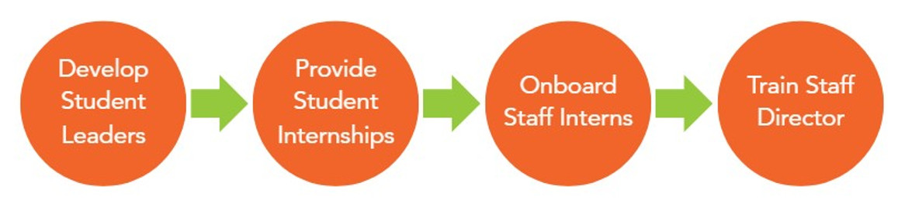
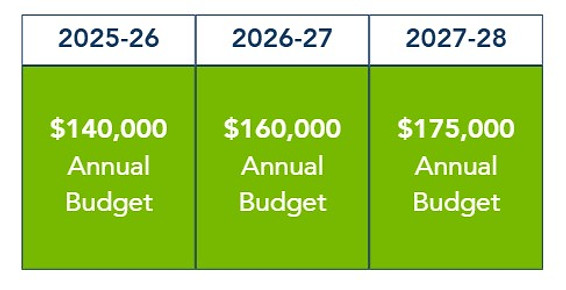
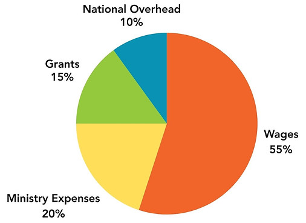

Partner With Us
As we continue to long for revival in the hearts of our students and on SDSU’s campus, we are saying yes to partnership with God in the work that He’s already doing. We invite you to do the same!
Whether praying, volunteering, or giving financially, your “yes” allows students to know who Jesus is and how He loves His people.
If you have any questions on how to support or partner with Greek IV at SDSU, please reach out using the contact information below.
The Need
In addition to academic and social pressures, research shows that this generation of students is experiencing increased isolation, loneliness, and stress. And YET, Jesus is encountering this generation with a new fire and hope.
As we see an increase of students with a hunger for Jesus, we want to be equipped with personal discipleship opportunities for each student that enters a Greek IV space. This means we need to focus on student-to-staff pipeline development, which looks like the following:

Funding Goals
With this vision in mind, our goal is to raise $175,000 by 2028 annually to create a sustainable foundation for the future.


We're praying for...
- 24 partners to give $75 a month to join the ministry.
- 4 partners to give $7,500 annually to join the ministry.
Will you join us in this vision through financial partnership?